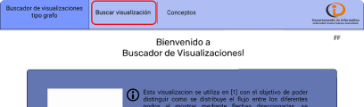
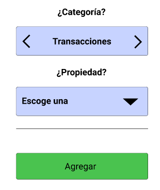
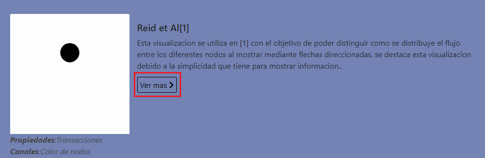

<body style="margin-top:3%">


    <section>

        <div class="card centerCard" style='padding-bottom: 0%;color:white'>
            <h3 style="padding:6% 0% 0 3%"><b>¿Como buscar una visualizacion?</b></h3>
            <div style="margin-left: 3%; display:flex">
                <hr style="width: 30%;height: 4px;color:black " />
            </div>
            <p style='padding: 0 3% 0 3%; text-align: justify;'>
                Si deseas buscar una nueva visualización solo debes:
            </p>
            <div class="row" style="margin: 0 3%; padding-bottom: 2%;">

                <div class="col-8">
                    <ol>
                        <li style='padding:30px'>hacer clic en BUSCAR VISUALIZACION en el menú de navegación.</li>
                    </ol>
                    

                </div>
                <div class="col-4">
                    
                </div>
            </div>
            <div class="row" style="margin: 0 3%; padding-bottom: 2%;">
                <div class="col-3" style='padding:15px'>
                    
                </div>
                <div class="col-9">
                    <ol>
                        <li value='2' style="padding:30px">Luego agregar las propiedades que deseas que aparezcan según sus categorías.</li>
                    </ol>
                    

                </div>
                
            </div>
            <div class="row" style="margin: 0 3%; padding-bottom: 2%;">
                <div class="col-4">
                    
                </div>
                <div class="col-8">
                    <ol>
                        <li value='3' style='padding: 15px;'>En la derecha aparecerán las diferentes visualizaciones que concuerden con tus criterios de búsqueda y en el símbolo de información se encuentra el estándar utilizado para crearla.</li>
                    </ol>
                    

                </div>
                
            </div>
            <div style="display:flex">
                <hr style="margin-left:3%;color:rgb(0, 0, 0); height: 4px;background-color:white ;" />
            </div>
            <div>
                <a [routerLink]="['/conceptos']">
                    <i class="fas fa-long-arrow-alt-left fa-2x"
                        style="border-radius: 8px;padding:3px 8px;margin-left: 3%;margin-bottom: 5%;color:black;background-color: white;"></i>
                </a>
            </div>
        </div>


    </section>
    <!--   #############  INFORMACIONES POPUP   ######### -->

</body>